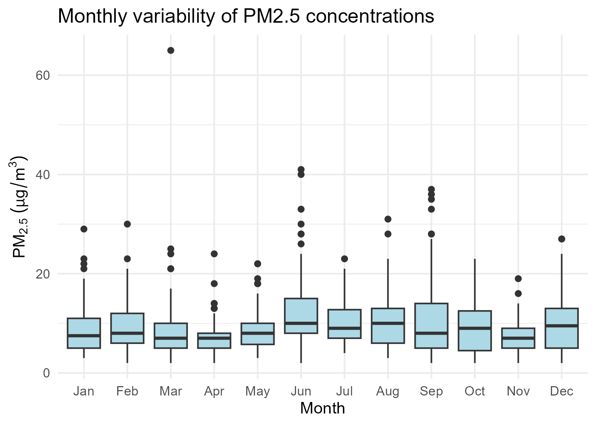
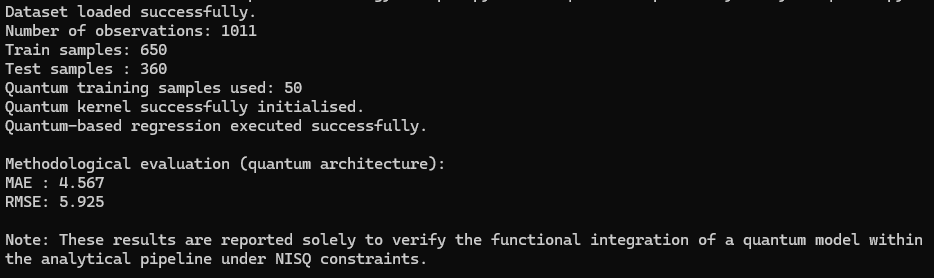

Urban PM2.5 Methodology
A reproducible and extensible analytical pipeline for applied data science
1 📂 Data preparation and harmonisation
1.1 Analytical context
Urban air quality datasets are typically affected by issues such as missing observations, irregular temporal coverage, and heterogeneous formats.
Before any exploratory or modelling analysis can be considered meaningful, it is therefore essential to ensure that the data are clean, temporally consistent, and analysis-ready.
This initial stage establishes the analytical baseline for the entire pipeline.
1.2 Data source and scope
The analysis is based on daily PM2.5 concentration measurements collected at an urban monitoring location over the period 2021–2023.
The dataset is treated as an observational time series, with explicit attention to: - temporal ordering, - continuity of measurements, - and potential gaps in data availability.
No spatial aggregation or external data sources are introduced at this stage.
1.3 Preparation strategy
The data preparation process follows a transparent and reproducible strategy:
- Raw data are loaded directly from the
data/directory. - Date fields are parsed and validated to ensure correct temporal ordering.
- Missing or invalid observations are identified explicitly.
- No interpolation or synthetic data generation is performed.
- All transformations are executed programmatically.
This conservative approach ensures that subsequent analytical results remain traceable to the original observations.
1.4 Script executed
The complete data preparation logic is implemented in the following script:
01_data_and_preprocessing.R
The script produces a clean, analysis-ready dataset that is reused consistently across all subsequent stages.
2 🔍 Exploratory and structural analysis
2.1 Analytical context
Before applying any modelling strategy, it is essential to understand the temporal and structural properties of the PM2.5 time series.
This exploratory stage is not intended to maximise insight discovery, but to: - characterise variability, - identify seasonal behaviour, - and detect structural constraints that inform later methodological choices.
2.2 Daily PM2.5 time series
The daily time series provides a first global view of the data, revealing both short-term variability and longer-term patterns.
Key observations include: - pronounced day-to-day fluctuations, - clear medium-term structure, - and visible temporal gaps in specific periods.
These features confirm the time-dependent nature of the data and justify the use of time-aware validation strategies.

2.3 Monthly distribution of PM2.5 concentrations
Monthly boxplots summarise the distributional properties of PM2.5 concentrations across the calendar year.
This representation highlights: - differences in central tendency between months, - varying dispersion levels, - and the presence of extreme values beyond the interquartile range.
Such variability suggests that simple aggregate indicators are insufficient to characterise urban air quality dynamics.

2.4 Average annual cycle
The average annual cycle aggregates daily observations by month, providing a compact representation of seasonal behaviour.
This view reveals: - systematic seasonal patterns, - periods of elevated concentrations, - and months with comparatively stable behaviour.
The presence of a clear annual cycle supports the inclusion of temporal structure in subsequent modelling stages.
3 📐 Classical modelling and evaluation
3.1 Analytical context
The purpose of this modelling stage is not to optimise predictive performance, but to establish methodological reference points that are consistent with the temporal nature of the data.
Rather than comparing multiple complex algorithms, the analysis focuses on simple and interpretable models that allow clear evaluation of forecasting behaviour under realistic constraints.
3.2 Modelling strategy
Two baseline modelling approaches are considered:
- Persistence baseline: assumes that the PM2.5 concentration at time t is equal to the observed value at time t − 1.
- Linear regression model: uses lagged PM2.5 values as predictors to capture short-term temporal dependence.
Both models are deliberately simple and serve as methodological anchors, not as candidates for optimal forecasting.
3.3 Temporal validation design
To preserve the integrity of the time series, a time-based split is applied:
- The training period includes the earliest observations.
- The test period consists of the most recent segment of the series.
No random shuffling or cross-validation is used, as such approaches would violate temporal causality.
This validation strategy ensures that model evaluation reflects realistic forecasting conditions.
3.4 Model execution
he classical modelling and evaluation procedures are implemented in the following script:
The script is executed offline as part of the analytical pipeline and generates the evaluation outputs presented below.
3.5 Observed versus predicted concentrations
A visual comparison between observed and predicted PM2.5 concentrations is used to assess model behaviour over the test period.
This representation allows qualitative evaluation of the following aspects.
- trend tracking
- responsiveness to variability
- systematic bias

3.6 Quantitative evaluation
Model performance is summarised using standard error metrics: - Mean Absolute Error (MAE) - Root Mean Squared Error (RMSE)
These metrics are reported to characterise forecasting reliability, not to declare model superiority.
The results confirm that simple linear structures provide modest improvements over naive persistence while remaining fully interpretable.
3.7 Methodological implications
This modelling stage leads to three key methodological conclusions:
Simple baselines are essential for contextualising model performance.
Time-aware validation is critical in environmental forecasting.
Increased model complexity is not justified without clear methodological benefit.
These conclusions establish a stable reference framework for any subsequent methodological extensions, including emerging computational paradigms.
4 ⚛️ Quantum methodological extension (demonstrative)
4.1 Analytical context
This stage explores the extensibility of the methodological pipeline to emerging computational paradigms, specifically quantum machine learning under current Noisy Intermediate-Scale Quantum (NISQ) constraints.
The objective is not to achieve superior predictive performance, nor to compare quantum and classical models, but to demonstrate that the pipeline can accommodate novel architectures without structural modification.
4.2 Conceptual motivation
Quantum computing is increasingly discussed in the context of data science and machine learning. However, many applications remain speculative or disconnected from realistic data constraints.
In this notebook, the quantum component is introduced with a conservative and methodological focus, respecting the following principles:
- Explicit acknowledgment of current hardware and algorithmic limitations.
- Reduced training size to ensure computational feasibility.
- Absence of performance claims or scalability assertions.
- Clear separation between methodological demonstration and empirical optimisation.
4.3 Quantum modelling strategy
A quantum kernel-based regression approach is employed as a proof of concept.
Key characteristics of the implementation include:
- Feature mapping using a parameterised quantum circuit.
- Kernel evaluation executed on a quantum simulator.
- Integration with classical regression through hybrid quantum–classical workflows.
- Deliberate restriction of the training subset size.
This strategy allows the quantum block to be executed within the same analytical pipeline used for classical models.
4.4 Execution environment
The quantum methodological extension is executed in a dedicated Python environment configured with Conda and Qiskit.
Due to the specialised nature of the environment and current NISQ constraints, the execution is documented rather than reproduced directly within this notebook.

4.5 Interpretation of results
The reported outputs confirm that the quantum-based analytical component can be executed coherently within the proposed pipeline under realistic computational constraints.
No claims of predictive superiority or scalability are made. The results serve exclusively as a functional validation of methodological extensibility.
5 🌐 Repository and Citation
All code, figures, and harmonised datasets are openly available at:
https://github.com/jcaceres-academic/urban-pm25-methdology
When citing this educational resource, please use:
Cáceres-Tello, J., & Galán-Hernández, J. J. (2025).
Urban PM2.5 Methodology: A reproducible analytical pipeline for applied data science. Available at: https://jcaceres-academic.github.io/urban-pm25-methodology/ DOI: [placeholder]
This ensures traceability and recognition for open-source academic contributions.
6 📚 References
All cited works are managed through the shared bibliographic file
A public mirror of this bibliography is archived in the author’s Zotero collection:
➡️ https://www.zotero.org/jcaceres_academic/collections/X6RW9UGU